困ったときの Q&A と、コピペで使える活用プロンプト集。講座の内容をまとめました。
「こんなチラシが欲しい」と言葉で伝えるだけで、Claudeが Canva に本格デザインのたたき台を作ってくれます。さらに Chrome 拡張を入れれば、Canva の編集画面で Claude に直接指示して微調整までできます。
Claude と Canva をつなぐ準備（最初の1回だけ）
Claude Code の入力欄左下の「＋」をクリック →「コネクタ」→「コネクタを追加」を選びます。
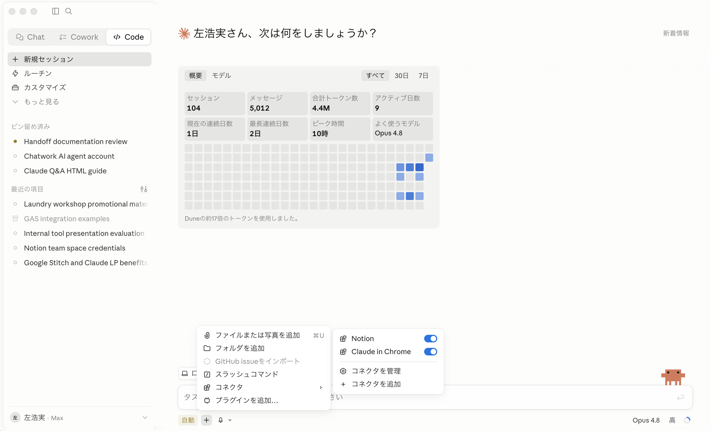
＋ →「コネクタ」→「コネクタを追加」
検索窓に「canva」と入力し、表示された Canva（Anthropic & パートナー）を選んで追加。画面の案内に従って Canva アカウントと連携（アクセスを許可）します。
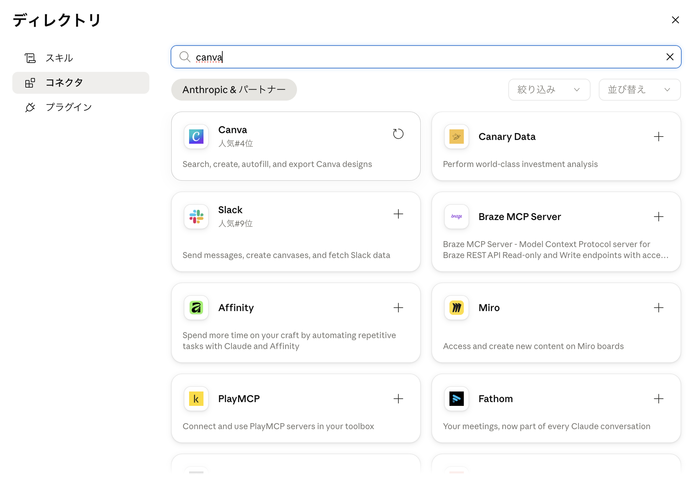
「canva」で検索 → Canva を追加して連携
作りたいチラシを言葉で伝えるだけ
どんなチラシが欲しいかを伝えると、Claude がコネクタ経由で Canva にデザイン候補を生成します。
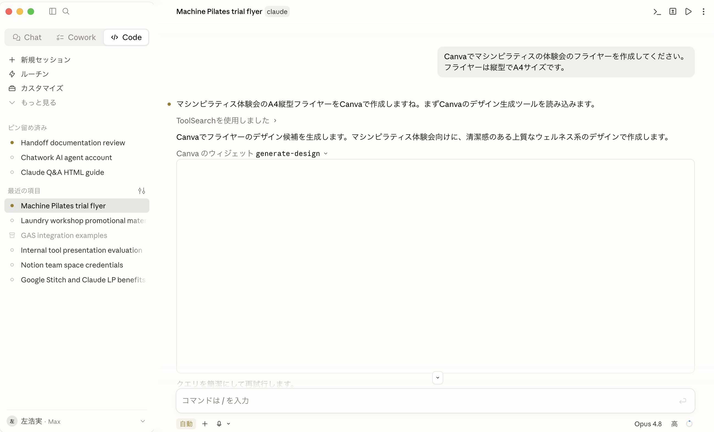
Claude が Canva のデザイン生成ツール（generate-design）を呼び出す
しばらくすると、複数のデザイン候補とプレビューリンクが返ってきます。気に入った案を選びます。
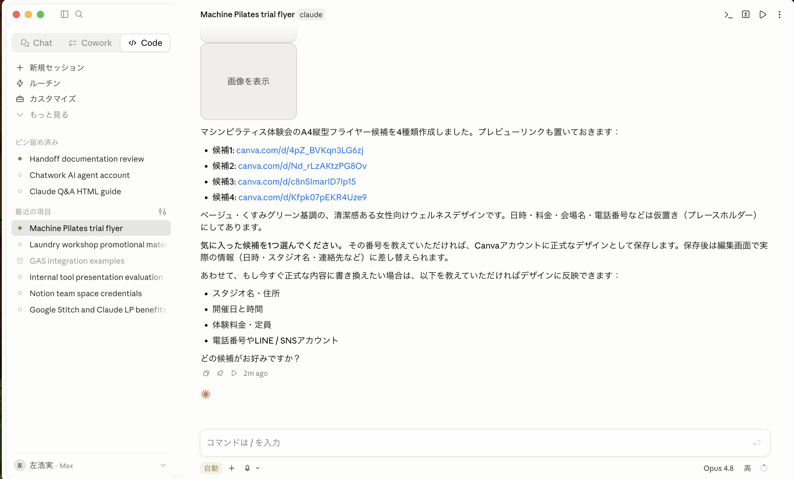
候補とプレビューリンクが提示される → 好きな案を選ぶ
採用する案を伝え、スタジオ名・開催日・料金・定員などの具体情報を渡すと、Canva に正式保存しながら内容を反映してくれます。
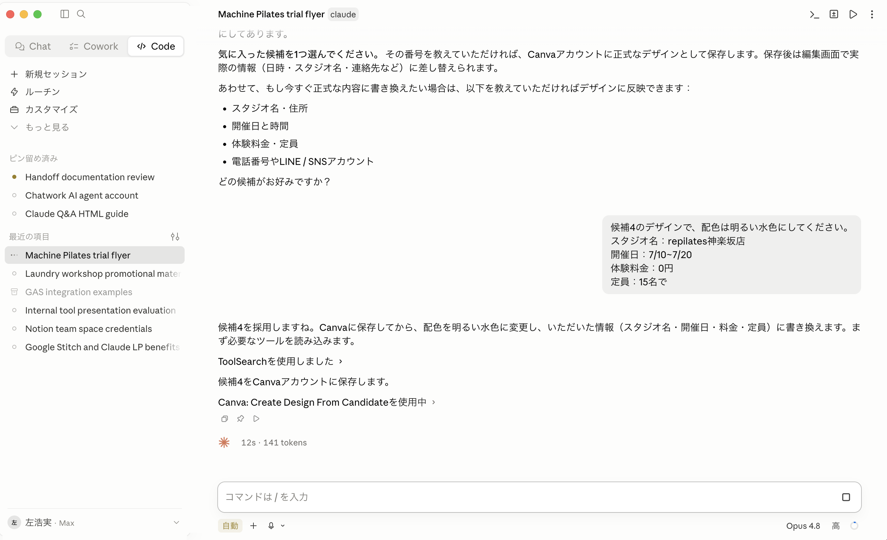
選んだ案を Canva に保存し、渡した情報を反映
さらに案を絞り込み、最終的に採用する案を伝えます。
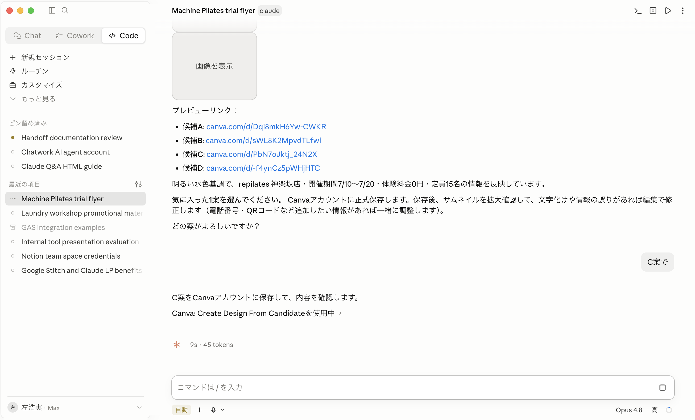
「C案で」のように一言で決定できる
最後に 連絡先（TEL・住所・LINE/Instagram）などを確定すると、保存が完了します。
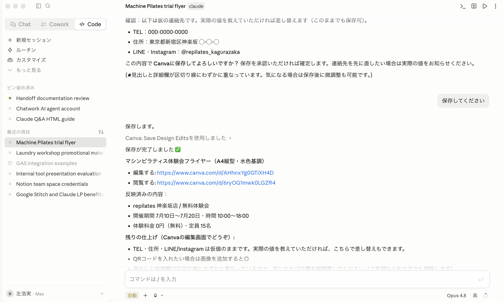
内容を確定 → 保存完了。編集用リンクも返ってくる
仕上げは Canva の編集画面で
Claude が返す「Canvaで開く」リンクから編集画面へ。写真や文字の最終調整は Canva 上で行えます。
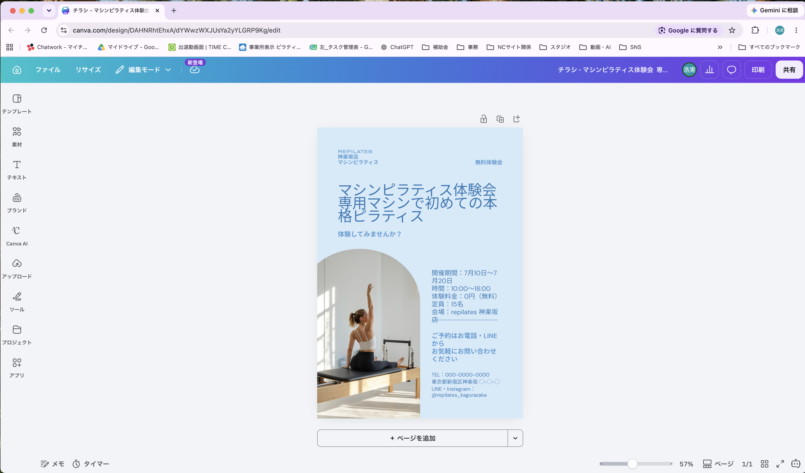
Canva の編集画面で完成したフライヤーを確認
Canvaの画面で Claude に直接指示するための準備
Canva の編集画面で Claude に直接指示するには、Chrome 拡張を入れます。まず Chrome ウェブストアを開きます（Google で「拡張機能」を検索 → Chrome ウェブストア、または chromewebstore.google.com）。
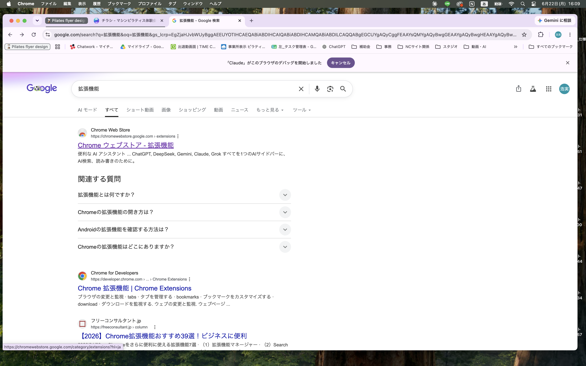
「拡張機能」を検索 → Chrome ウェブストアへ
検索窓で「claude」を検索し、Claude（Claude in Chrome / Beta）を選んで「Chromeに追加」します。会社アカウントでログインしてください。
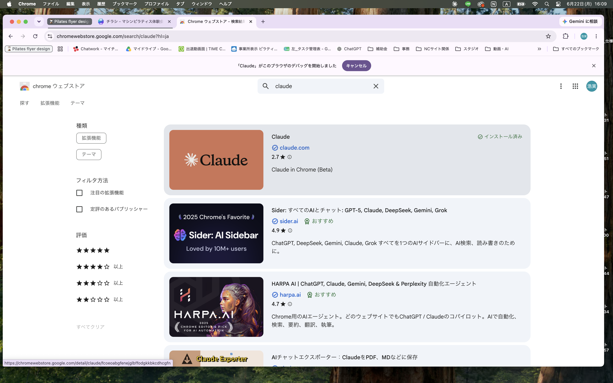
「claude」を検索 → 「Claude」を選んで Chrome に追加
「文字色を濃くして」と頼むだけで反映
拡張を入れると、Canva の編集画面の右側に Claude パネルが出ます。「文字色を濃い水色にして」のように指示すると、Claude がその場で Canva を操作して反映します。
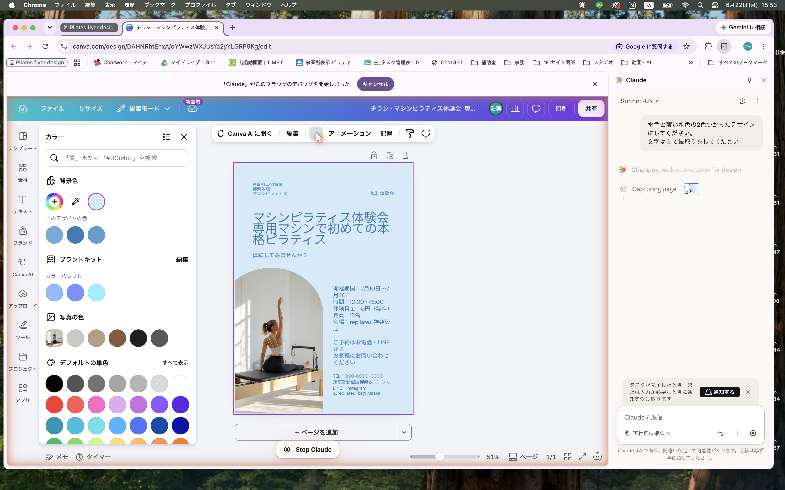
右側の Claude パネルに指示 → Canva をその場で編集してくれる